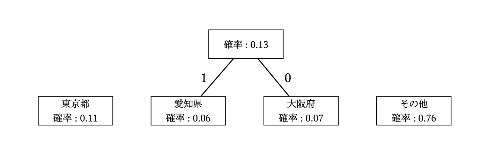
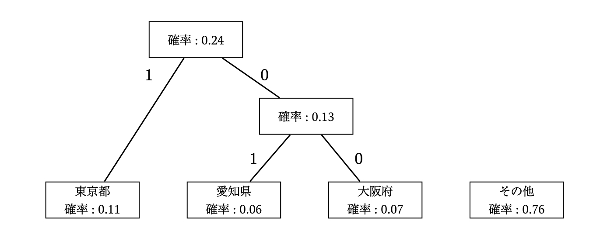
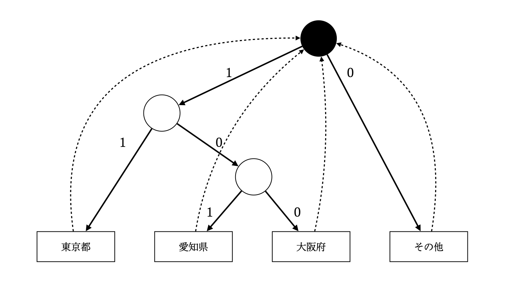
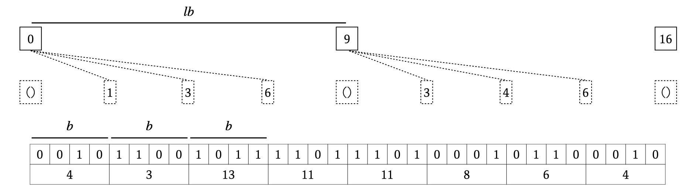
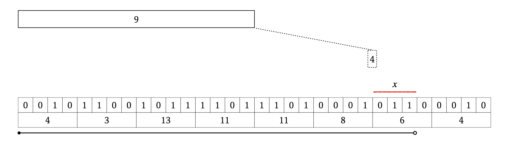

コンピュータ上のデータの表現はメモリ上に並んだ \(01\) 要素によって行われます。例えば、整数 \(11\) は二冪の整数の和 \(2^0 + 2^1 + 2^3\) に分解し、\(2\) の指数部分の桁を \(1\) にした \(01\) 列 : \(1011\) をメモリ上に配置することで、整数 \(11\) をコンピュータのメモリ上に格納できます。この符号化手法を二進符号化と言います。
ある集合 \(S\) に含まれる任意の要素を表現できるために必要なビット数の下限は \(\lceil \log{|S|} \rceil\) ビットです。例えば、\(0\) 以上 \(1000\) 以下の整数全てを表現するためには \(\lceil \log{1001} \rceil = 10\) ビット必要であり、これより少ないビット数で \(0\) 以上 \(1000\) 以下の整数全てを表現することはできません。
扱う情報を定量化するための手段として、以下に注意して情報量という概念を導入します。
確率 \(p\) で起こる事象の情報量は \(\log_2{\frac{1}{p}}\) で定義されます。なお、この式は情報量が満たすべき性質を満たしている式の \(1\) つというだけで、(見たことありませんが) 対数の底が \(2\) 以外が使われている場合があるかもしれません。
また、集合 \(A\) のいずれかの値をとる確率変数 \(X\) に対してエントロピー \(H(X)\)を以下で定義します。ただし、\(P(X = x)\) とは確率変数 \(X\) の実現値(観測値)が \(x\) となる確率です。
特に断りがない場合、集合 \(S\) に属する要素 \(1\) つを表現するビット数は \(\lceil \log{|S|} \rceil\) ビットですが、要素の登場頻度に偏りがある場合、登場頻度 (登場確率) が高い要素には短い符号を、登場頻度 (登場確率) が低い要素には長い符号を割り当てることで、\(1\) 要素を表現するビット数の期待値を \(\lceil \log{|S|} \rceil\) ビットよりも小さくすることができます。
例として、すべての日本人の住所を「東京都 , 愛知県 , 大阪府 , その他」のいずれかのラベルで管理するプログラムを作りたい場合、それぞれのラベルに \(00,01,10,11\) の \(4\) 種類の符号を割り振ることでラベル \(1\) つあたりを \(2\) ビットで管理することができます。例えば、\(7\) 人の住所データ {東京都,東京都,大阪府,東京都,愛知県,その他,東京都} それぞれの符号を左から連結することで、符号列 00001000011100 を得ることができます。
しかし、もしも日本人の住所の確率分布に以下のような偏りがわかっている場合、それぞれに \(2\) ビット使うのは非効率的であると推測できます。
そこで全てのラベルに \(2\) ビットずつ割り当てるのではなく、登場確率が大きいものほど短い符号に、登場確率が小さいものほど長い符号にすることにします。例えば、最も登場確率が大きい要素「その他」の符号を 0 とし、同様に{東京都,大阪府,愛知県} の符号はそれぞれ {11,100,101} とします。
それぞれの登場確率から、この符号化によって得られる符号の長さの期待値は \((0.76\times 1) + (0.11\times 2) + (0.06\times 3) + (0.07\times 3) = 1.37\) ビットであり、\(2\) ビットよりも小さいことがわかります。
一方この要素(確率変数)のエントロピーは約 \(1.163\) です。実は、確率的に偏りのある要素の符号化とエントロピーの間には、符号長の期待値はエントロピーを下回らないという関係があります。
先述の例 「東京都 , 愛知県 , 大阪府 , その他」 の符号はハフマン符号です。ハフマン符号は以下のアルゴリズムで構築するハフマン木から得られます。

この時繋ぐ辺は \(2\) つであり、片方のラベルを \(0\) に、他方のラベルを \(1\) にします。

この処理によって最終的にできる木がハフマン木です。葉はいずれかの要素に対応しており、根から葉までのパス上のラベルを順に連結したものが各要素のハフマン符号です。なお、ハフマン木の葉の深さは \(O(\log{(要素の種類数)})\) のため、符号の最大の長さも \(O(\log{(要素の種類数)})\) です。

またこの木は、根が初期状態で葉が受理状態のオートマトンとして考えることができます。入力として与えられたハフマン符号列をオートマトンが左から読み込み、受理状態に到達したらその時点で読んだ符号を復号できます。受理状態に到達したらオートマトンは即座に初期状態に戻り、次のビットから読み込みを再開します。
このオートマトンでは受理状態に到達したらそこまでの符号はその時点で復号できていることになります。例えば符号列 010011 は、0100 まで読んだ時点でそれまでの符号列が {その他,大阪府} であることが確定します。このような符号を瞬時符号と言い、ハフマン符号においては、受理状態から根すなわち初期状態以外の移動先が存在しないことから瞬時符号であることが言えます。
列の任意の箇所にピンポイントでアクセスすることをランダムアクセスと言います。符号化を考えるにあたって、列の符号化結果の情報を用いて元の列にランダムアクセスすることができるかは重要なポイントになります。
例えば \(p\) ビット整数の二進符号列は、列の \(1\) 要素ごとに一律 \(p\) ビットの符号が割り当てられていることから、元の列の 0-index で \(i\) 番目の要素は、符号列の半開区間 \([ip , (i+1)p) \) の符号から復元できることが分かります。
それに対して、先述のハフマン符号は要素ごとに符号の長さが異なるため、要素に対応する符号が符号列のどの位置から始まるかという情報を持つ必要があります。この情報は \(1\) つあたり \(\log{(符号列の長さ)}\) ビット必要なので、ハフマン符号化したとはいえメモリ効率が良いとは言えなくなります。
\(01\) 列のことをビットベクトルと呼びます。適切に実装すれば、長さ \(N\) のビットベクトルのデータサイズは \(N\) ビットです。ここでは、長さ \(N\) のビットベクトルに対して以下の操作を定義します。
この処理を行うために以下の図のようなデータ構造を作ります。

まず、\(\mathrm{lb}\) ビットごとにそれまでの \(1\) のビットの個数を記録した配列 \(L\) を作ります。この配列のサイズは \(\frac{N}{lb}\) です。
次に、\(\mathrm{b}\) ビットごとに「最後に \(L\) に記録された位置」以降の \(1\) のビットの個数を記録した配列 \(S\) を作ります。この配列のサイズは \(\frac{N}{b}\) です。ただし、\(L\) と重なる部分に記録する値は未定義とします。実装しやすいように自身でよしなにしてください。
最後に、元のビット列を \(\mathrm{b}\) ビットごと \(\mathrm{b}\) ビット整数にビットマスクしておきます。ただし、図では左のビットが小さい桁になるようにビットマスクしています。
このデータ構造を用いることで、先述の \(\mathrm{rank1}\) の計算を以下のように実行できます。

配列 \(L\) と配列 \(S\) を使用可能な部分に関しては、それらから \(1\) のビットの個数を取得します。その後、はみ出ている部分 (長さを \(x\) とする) の \(1\) の個数を、ビットマスクした整数の先頭 \(x\) ビットの \(\mathrm{pop\_count}\) で取得し、それらを全て足し合わせます。
\(\mathrm{pop\_count}\) は整数の \(1\) のビットの個数を取得する操作なので、先頭 \(x\) ビットに対してこれを実行するためにビットシフトを行う必要があります。厳密にはわかりませんが、ビットシフトも \(\mathrm{pop\_count}\) も高速に実行可能です。
配列 \(L\) のサイズは \(O(\frac{N}{lb})\) であり、要素の大きさは \(O(N)\) なので \(O(\frac{N\log{N}}{lb})\) ビット必要です。また配列 \(S\) も同様に \(O(\log{lb})\) ビットを \(O(\frac{N}{b})\) 個格納するので \(O(\frac{N\log{lb}}{b})\) ビット必要です。
\(b,lb\) はデータ構造のパラメータなので、これを適切に設定することで空間計算量を \(O(N)\) ビットに抑えることができます。自分は \(lb = 65536 , b = 64\) としています。(計算すると、\(1.3N\) ビット程度で済むことが分かります。)
狭義単調増加な数列 \(p := p_1,p_2,\dots,p_n (p_1 < p2 < \dots < p_n)\) を符号列に変換する手法を考えます。
符号の評価基準として、はじめに \(p\) を二進符号で変換した場合の符号長を示します。\(p\) は増加列なので、符号長は \(n\lceil \log{p_n} \rceil\) ビットです。
\(x = \lfloor\log{\frac{p_n}{n}}\rfloor\) として、\(p\) の要素の下 \(x\) ビットは長さ \(x\) の二進符号列に変換する。残りの上位ビットは、上位の二進符号の十進数表現の隣接要素の差分を、一進表現として連結する。復元の際はビットベクトルの select を用いる。(TODO 色々説明)
ビット数は、およそ \(xn + 1.5\times(n+\lfloor \frac{p_n}{2^{x}} \rfloor)\) ビット。数列 \(\{ 1,6,9,10,24,29,31,33,42,50,55,59,60,61,63\}\) を符号化すると、パフォーマンスは以下の通り。
また参考までに、ビットベクトルのビットと \(p\) の要素の存在を対応づける場合のビットサイズはおよそ \(1.5\times p_n\) であり、上記の例では 90 bits を超えます。
TODO : 色々詰める